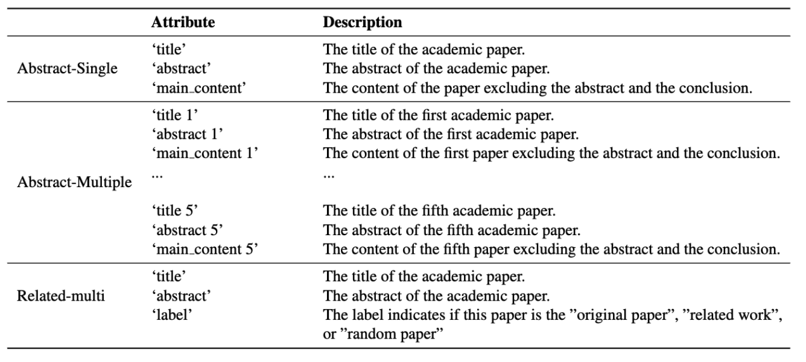

Dataset Card
For AcademicEval-abstract, in the single document setting, each case includes the paper title, abstract, and main content, excluding the abstract and conclusion. For the multiple document setting, we combine five such entries into one. For AcademicEval-related, each paper includes a title, its abstract, and a label indicating whether it is the original paper, the original paper's related work, or just a random paper under the same broader field.
